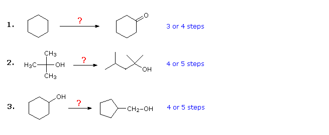
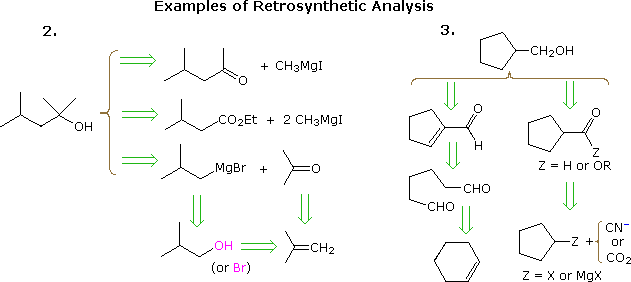
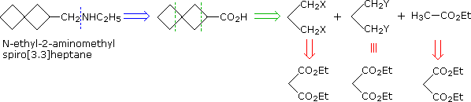
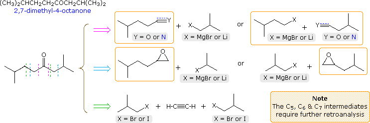
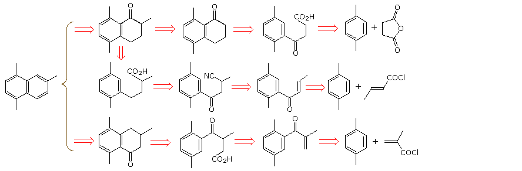
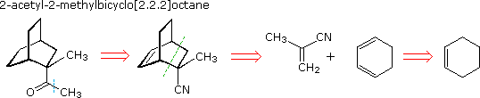
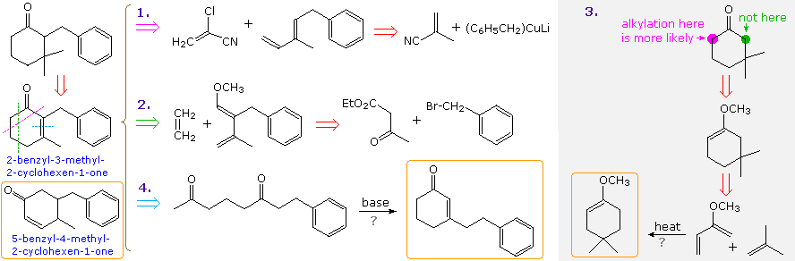
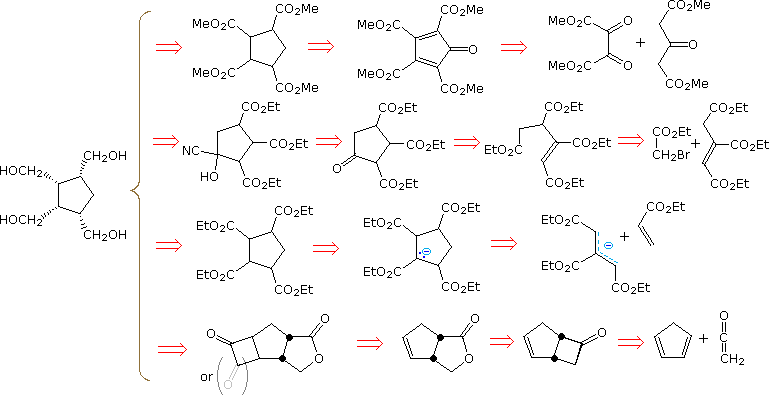
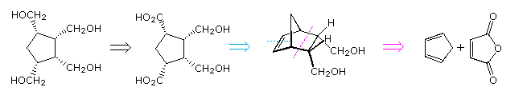

The study of organic chemistry exposes a student to a wide range of interrelated reactions. Alkenes, for example, may be converted to structurally similar alkanes, alcohols, alkyl halides, epoxides, glycols and boranes; cleaved to smaller aldehydes, ketones and carboxylic acids; and enlarged by carbocation and radical additions as well as cycloadditions. All of these products may be transformed subsequently to a host of new compounds incorporating a wide variety of functional groups, and thereby open to even further elaboration. Consequently, the logical conception of a multistep synthesis for the construction of a designated compound from a specified starting material becomes one of the most challenging problems that may be posed. A one or two step sequence of simple reactions is not that difficult to deduce. If, for example, one is asked to prepare meso-3,4-hexanediol from 3-hexyne, most students realize it will be necessary to reduce the alkyne to cis or trans-3-hexene before undertaking glycol formation. Permanaganate or osmium tetroxide hydroxylation of cis-3-hexene would form the desired meso isomer. From trans-3-hexene it would be necessary to first epoxidize the alkene with a peracid, followed by ring opening with hydroxide ion. This example illustrates a common feature in synthesis: often there is more than one effective procedure that leads to the desired product.
Longer multistep syntheses require careful analysis and thought, since many options need to be considered. Like an expert chess player evaluating the long range pros and cons of potential moves, the chemist must appraise the potential success of various possible reaction paths, focussing on the scope and limitations constraining each of the individual reactions being employed. This can be a daunting task, the skill for which is acquired by experience, and often trial and error. The three examples shown below are illustrative. The first is a simple functional group conversion problem, that may initially seem difficult. It is often helpful to work such problems backwards, starting from the product. In this case it should be apparent that cyclohexanol may be substituted for cyclohexanone, since the latter could then be made by a simple oxidation. Also, since cyclohexane (and alkanes in general) is relatively unreactive, bromination (or chlorination) would seem to be an obvious first step. At this point one is tempted to convert bromocyclohexane to cyclohexanol by an SN2 reaction with hydroxide ion. This reaction would undoubtedly be accompanied by E2 elimination, so it would be cleaner, although one step longer, to first make cyclohexene and then hydrate it by any of several methods (e.g. oxymercuration and hydroboration) including the one shown by clicking on the diagram

Plausible solutions for the second and third problem will also appear above at this point. In problem 2 the desired product has seven carbon atoms and the starting material has four. Clearly, two intermediates derived from the starting compound must be joined together, and one carbon must be lost, either before or after this bonding takes place. The 3º-alcohol function in the product suggests formation by a Grignard addition to a ketone, and isobutene appears to be a good precursor to each of these reactants, as shown. The reactant and product compounds in the third problem are isomers, but some kind of bond-breaking and bond-making sequence is clearly necessary for this structural change to occur. One possible procedure is shown above. Acid-catalyzed rearrangement of cyclohexene oxide, followed by reduction might also serve.
The useful approach of working out syntheses starting from the target molecule and working backward toward simpler starting materials has been formalized by Prof. E. J. Corey (Harvard) and termed retrosynthetic analysis. In this procedure the target molecule is transformed progressively into simpler structures by disconnecting selected carbon-carbon bonds. These disconnections rest on transforms, which are the reverse of plausible synthetic constructions. Each simpler structure, so generated, becomes the starting point for further disconnections, leading to a branched set of interrelated intermediates. A retrosynthetic transform is depicted by the => symbol, as shown below for previous examples 2 & 3. Once a complete analysis has been conducted, the desired synthesis may be carried out by application of the reactions underlying the transforms.

The above diagram does not provide a complete set of transforms for these target compounds. When a starting material is specified, as in the above problems, the proposed pathways must reflect that constraint. Thus the 4-methyl-2-pentanone and 3-methylbutyrate ester options in example 2, while entirely reasonable, do not fit well with a tert-butanol start. Likewise, a cyclopentyl intermediate might provide an excellent route to the product in example 3, but does not meet the specified conditions of the problem. Retrosynthetic analysis is especially useful when considering relatively complex molecules without starting material constraints. If it is conducted without bias, unusual and intriguing possibilities sometimes appear. Unfortunately, molecular complexity (composed of size, functionality, heteroatom incorporation, cyclic connectivity and stereoisomerism) generally leads to very large and extensively branched transform trees. Computer assisted analysis has proven helpful, but in the end the instincts and experience of the chemist play a critical role in arriving at a successful synthetic plan. Some relatively simple examples, most having starting material restrictions, are provided below.
A synthesis of N-ethyl-2-aminomethylspiro[3.3]heptane from starting compounds having no more than three contiguous carbon atoms is required. This provides a good example of the importance of symmetry in planning a synthesis. First, it should be recognized that the amine group is best introduced at the end of the synthesis, by reacting ethylamine with an ester (or acyl chloride derivative) of spiro[3.3]heptane-2-carboxylic acid, followed by LiAlH4 reduction. This approach avoids the necessity of protecting a nucleophilic nitrogen from undesired participation in other reactions. Second, the symmetry of the remaining carbon skeleton suggests its disconnection into 1,3-difunctionalized propane units, as shown below. All of these have a common origin in diethyl malonate, which can be reduced to a 1,3-glycol and then converted into 1,3-dibromopropane.

A synthesis of 2,7-dimethyl-4-octanone from starting compounds having no more than four contiguous carbon atoms is required. The structural formula and a first-stage retroanalysis of this ketone are displayed in the following diagram. Three straightforward disconnections are shown, as drawn by the dashed lines. The first (magenta arrow) is undoubtedly the simplest, since a Grignard reagent addition to a suitable nitrile gives the product directly. However, one or more of the reactants is larger than C4 and must therefore be prepared independently before use. A two-step procedure involving Grignard addition to an aldehyde, followed by oxidation of the 2º-alcohol product, also suffers the same requirement, as do the epoxide opening routes presented in the second row (cyan arrow). Secondary preparations of these intermediates are easily conceived by way of cyanide substitution of a 1º-halide, coupling of a Gilman reagent with allyl bromide, or Grignard addition to ethylene oxide. The last disconnection (green arrow) creates the desired carbon skeleton by sequential alkylations of terminal alkynes (first acetylene and then 4-methyl-1-pentyne). Mercury catalyzed hydration of the symmetrical octyne product generates the desired ketone. All the necessary reactants are C4 or less, so the synthesis is accomplished in three steps (not counting the formation of alkyne salts).

Three more first-stage analyses will be displayed above by clicking on the diagram. The first of these (red arrow) is a two step sequence initiated by isobutyl magnesium bromide addition to acetonitrile, followed by isobutyl bromide alkylation of the resulting 4-methyl-2-pentanone. Regioselective control might be a problem in the last step. The second disconnection (orange arrow) suggests an α, α'-dialkylation of acetone. Since acetone itself is prone to base-catalyzed condensation, this might be difficult to accomplish directly. However, the use of ethyl acetoacetate avoids this problem for the first step, and the second alkylation is the same one proposed as part of the first disconnection synthesis. Both of these sequences would provide efficient routes to the target ketone. Finally, the last disconnection is a four component assembly consisting of two conjugate additions and a Grignard addition. This would most likely result in a longer and lower yield procedure than the previous two.
A synthesis of 1,4,6--trimethylnaphthalene from para-xylene and other starting compounds having no more than four contiguous carbon atoms is required. Plausible transforms for the attachment of the second ring carbons to para-xylene are Friedel-Craft alkylation or acylation (acylation is usually better), nucleophilic attack of an aryl metal reagent derived from 2-bromo-para-xylene on carbonyl or epoxide electrophiles, or possibly by cycloaddition to a aryne intermediate. A palladium catalyzed coupling reaction might also prove useful. Because of their simplicity and broad scope, we shall consider only the first two transforms. The following diagram shows retrosynthetic analyses based on the Friedel-Craft transform for both bond formations to the aromatic ring. Of these, the first seems to offer the most efficient synthesis route, consisting of Friedel-Craft acylation, Wolff-Kischner reduction, a second Friedel-Craft acylation and methylation of a ketone enolate. In all cases the substituted tetralone precursor of the desired naphthalene must be reduced to an alcohol and dehydrated. The resulting dihydro naphthalene is then aromatized by Pt catalyzed dehydrogenation, or mild oxidation by heating with sulfur or selenium.

By clicking on the diagram, a new set of disconnections, starting from 2-bromo-para-xylene, will be displayed. A derived Gilman or lithium reagent is used for conjugate addition to an unsaturated carbonyl compound or ring opening of an epoxide. Further lengthening of the side chain is effected by cyanohydrin formation (top example), malonic ester alkylation (middle example), and Arndt-Eistert homologation (bottom example). The final steps must then parallel those used for the first examples.
A synthesis of 2-acetyl-2-methylbicyclo[2.2.2]octane from cyclohexene and other starting compounds having no more than four contiguous carbon atoms is required. The target molecule has two bridged six-membered carbon rings, and cyclohexene is one of the starting materials. Whenever a six-membered carbon ring must be formed, possible Diels-Alder transforms should always be considered. For such a construction one needs a conjugated diene and a dienophile. Cyclohexene might be considered a dienophile, but acting as such would lead to a fused ring product, not a bridged ring structure. Also, commonly used electron-rich dienes are not expected to react well with an unstrained, electron-rich alkene. If the role of cyclohexene is changed to that of a diene, these objections are overcome. This alteration is easily managed by addition of bromine to cyclohexene, followed by a double elimination, yielding 1,3-cyclohexadiene.

The possible use of cyclohexadiene in this synthesis is shown above. A Diels-Alder cycloaddition to a dienophilic double bond generates the desired bicyclooctane ring system, and the task is to identify a reasonable intermediate for this purpose. Among the many reactions that form ketones, the addition of a Grignard reagent to a nitrile is particularly efficient. If we choose this as the last step, the dienophile becomes 2-methylacrylonitrile, and the retrosynthetic path is complete. The isolated double bond produced by the cycloaddition is reduced by catalytic hydrogenation, so distinction between exo and endo-addition products is lost (the endo-adduct shown predominated).
A synthesis of 2-benzyl-3,3-dimethylcyclohexanone from benzene derivatives having no more than seven carbons and other starting compounds having no more than four contiguous carbon atoms is required. Since conjugate addition of a methyl group to 2-benzyl-3-methyl-2-cyclohexen-1-one should proceed in good yield, this unsaturated ketone provides a good alternative target, as shown. Once again, the cyclohexane ring suggests a Diels-Alder transform. Three such disconnections are depicted in the following diagram along with a possible aldol cyclization (example 4). Diels-Alder approach 1 is the most promising, since it features an electron-rich diene reacting with an electron deficient dienophile. Chloroacrylonitrile is a useful surrogate to ketene as a dienophile (ketene normally reacts by [2+2} cycloaddition). Hydrolysis of the α-chloronitrile unit in the adduct converts it to a carbonyl group. Unfortunately, the regioselectivity of this cycloaddition is likely to be poor, with 5-benzyl-4-methyl-2-cyclohexen-1-one (orange box bottom left) being formed in significant or possibly major amount. Also, the diene, (3E)-3-methyl-5-phenyl-1,3-pentadiene, needed for this reaction may be difficult to obtain as the desired stereoisomer (the Z-isomer will be relatively unreactive because of steric hindrance in the cisoid conformation). Diels-Alder synthesis 2 does not have a regioselectivity problem, but the reaction of an electron-rich diene with an electron-rich dienophile is often sluggish and incomplete. Also the initial adduct has a methyl ether where a carbonyl function is needed. The third Diels-Alder proposal in the gray-shaded area has even more problems. As in reaction 2, electronic factors make the cycloaddition poor, and the regioselectivity will likely favor the wrong adduct (circled in orange). Even if the desired 3,3-dimethylcyclohexanone were obtained, benzylation at the desired α-position (green) will have to compete with that at the less hindered α'-position (magenta).

By clicking on the diagram, a new set of disconnections will be displayed. The first of these (top line) is a cyclic aldol transform similar to the last case discussed. Here, however, the symmetry of the 1,5-diketone (after decarboxylation) permits only one cyclohexenone product, 3-methyl-2-cyclohexen-1-one (drawn in the light gray box). This key synthetic intermediate, known as a synthon, may lead to the target molecule in two ways, depending on the order in which conjugate addition and α-alkylation are conducted. Another useful concept, revealed by the disconnections in the last two rows, is that benzene derivatives may serve as precursors to cyclohexane compounds. By clicking on the diagram a second time, the reactions which may be used to achieve the proposed constructions will be shown above. Note the use of a Birch reduction in the second line. All three approaches should produce the target compound, the most efficient arguably being the third.
A synthesis of all-cis-1,2,3,4-tetrakis(hydroxymethyl)cyclopentane from simple starting materials (six or fewer contiguous carbons) is required. Since carboxylic acids, esters, aldehydes and 1º-alcohols are easily interconverted, this target may be changed to the corresponding tetracarboxylic acid, as shown in the following diagram. Constructing the cyclopentane ring becomes a primary goal, and this may be done by condensation reactions (first two disconnections), cycloaddition (third disconnection) or by starting with a cyclopentane reagent (last example). Although there is precedent in known chemistry for all these approaches, some turn out to have serious flaws.

By clicking on the diagram, chemical reactions corresponding to each of the disconnection paths will be shown above. The first example, which takes advantage of symmetry, turns out to suffer from subsequent rapid Michael addition of a second acetonedicarboxylic acid moiety to the intermediate cyclopentadienone. This is, in fact, a general synthesis of bicyclo[3.3.0]octane-3,7-diones, known as the Weiss reaction. The second approach constructs the five-membered ring by a Dieckmann condensation of a tetra-carboxylic ester prepared from triethyl aconitate. Addition of the fourth carboxyl group by way of a cyanohydrin should be straightforward, but a mixture of stereoisomers will result, with the all-cis compound being a minor component. The cycloaddition proposed for the third approach is allowed by orbital symmetry, but only a few examples have been observed. Pursing this synthesis would be unwise, because it suffers from the same lack of stereoselectivity as the second case. Finally, The last approach, involving sequential [2+2] cycloaddition of ketenes to cyclopentadiene, is longer and has an inherent problem associated with the regioselectivity of the conventional Baeyer-Villiger oxidation. This problem may be overcome by using chiral catalysts (enzymes or transition metal complexes) with hydrogen peroxide, but a 50% conversion is the best that can be achieved and stereoselectivity may still be a problem.
A careful examination of the tetracarboxylic acid target reveals a possible precursor in which the cis carboxyl groups at C1 and C4 are masked by incorporation in a double bond. Such a bicyclo[2.2.1]heptene structure is readily achieved from 1,3-cyclopentadiene by way of a Diels-Alder reaction, as shown in the following retrosynthetic disconnection. With this as a guide, a simple three step synthesis may be proposed (shown by clicking on the diagram). The borohydride workup of the ozonolysis in the last step will convert aldehydes to 1º-alcohols.

The following problems examine many aspects of organic synthesis. They are roughly organized by increasing difficulty.
One of the earliest, and perhaps most significant-although accidental-examples of synthesis was reported by Friederich Wöhler in 1828. In an experiment designed to prepare ammonium cyanate from silver cyanate, he heated the latter with ammonium chloride expecting the outcome shown below.
The product Wöhler obtained did not correspond to the expected cyanate salt, but was identified as urea, NH2CONH2, an organic compound isolated from urine fifty years earlier. This result was revolutionary in two respects. First it provided another example of isomerism, in that ammonium cyanate, ammonium fulminate (NH4O-N=C) and urea are all isomers, a novel concept for the time. Second it cast doubt on the widely held doctrine of vitalism, which maintained that all living organisms were endowed with a vital or life force that rendered them and their component parts uniquely different from ordinary "inorganic" matter. Thus, strongly heating organic substances such as carbohydrates and proteins yielded water, ammonia and carbonaceous solids (all inorganic), with loss of the vial essence. Wöhler's experiment was acclaimed as the first conversion of an inorganic substance into an organic compound. Less than twenty years later, the German chemist Adolf Kolbe provided an even more convincing synthesis of organic from inorganic substances. The two equations written below outline his experiment. First, carbon disulfide, obtained by reaction of carbon with sulfur, was converted to carbon tetrachloride by heating with chlorine, and the simultaneous pyrolysis of CCl4 yielded a mixture of products which included tetrachloroethene, presumably formed from dichlorocarbene (:CCl2). Treatment of tetrachloroethene with aqueous chlorine (think HOCl) gave trichloroacetic acid, which Kolbe reduced electrolytically to acetic acid. This ended the reign of vitalism as a scientific theory.
During the 1850's, the French chemist Pierre Berthelot synthesized scores of simple organic compounds, ranging from ethanol to acetylene and benzene, setting the stage for more ambitious attempts. Just as the alchemists sought to transmute base metals into gold, early organic chemists were drawn to the isolation or preparation of rare dyes, exotic perfumes and unusual spices, often worth more than their weight in gold. A notable example of this interest is William Perkin's attempt to synthesize quinine. Quinine, an important drug for the treatment of malaria, was available only from the bark of the South American tree Cinchona officinolis, and in the mid 1850's a decline in the native tree population had caused a large rise in the price of the drug. Very little was known about the compound, other than its molecular formula C20H24N2O2. Nevertheless, in the spring of 1856, William H. Perkin, a student (age 18) at the Royal College of Chemistry in London, attempted its synthesis in his home laboratory. Perkin reasoned that oxidation of a suitable 10-carbon amine, such as allyl toluidene, C10H13N, might generate quinine, as shown in the following equation.
This simple approach failed, and from our vantage point a century and a half later it is easy to see why. Many thousands of isomers having the molecular formula of quinine are possible, but only one unique configuration of these 48 atoms constitutes a molecule of quinine. That the atoms of allyltoluidine should, in the course of one reaction, selectively reorganize and combine in this specific fashion is beyond all reasonable probability. Perkin's experiment was a failure only in the respect it did not yield quinine, and his subsequent study of aromatic amine oxidations demonstrates the value of persistence. From an impure sample of aniline he obtained a purple dye he called aniline purple (also called mauve), which became the cornerstone of the synthetic dyestuff industry in Europe and made a fortune for its discoverer. A total synthesis of quinine was achieved in 1944 by R. B. Woodward and W. E. Doering (Harvard), and improved syntheses continue to be reported.
This page is the property of The Edvibe Team. Comments, questions and errors should be sent to contact@edvibe.co.ke. These pages are provided to the IOCD to assist in capacity building in chemical education. 05/05/2013